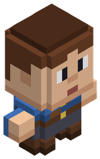
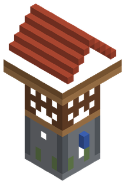
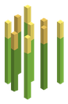
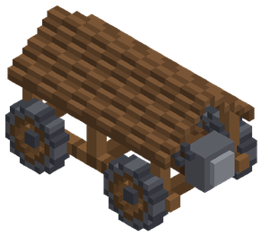

Cube Unbound
RPG de acción y sandbox de vóxeles con mundo abierto, diez razas, niveles del 1 al 500 y un mundo de 64 km de radio. Motor propio en C++20 sin dependencias externas, multijugador en red local o con servidor dedicado, y todo el contenido abierto a mods y packs de recursos.
Descargar la Alfa 0.1 (gratis) Primeros pasos Mods de la comunidad Únete al Discord
Explorar la wiki
 BestiarioFauna, monstruos y facciones con sus estadísticas, botín y biomas.
BestiarioFauna, monstruos y facciones con sus estadísticas, botín y biomas. Jefes y únicosLos guardianes de las mazmorras y las criaturas con nombre propio.
Jefes y únicosLos guardianes de las mazmorras y las criaturas con nombre propio.
Razas y habilidadesDiez razas con tres ramas de habilidades cada una. ObjetosArmas, armaduras, herramientas, materiales y bloques.
ObjetosArmas, armaduras, herramientas, materiales y bloques. FabricaciónTodas las recetas, agrupadas por estación de trabajo.
FabricaciónTodas las recetas, agrupadas por estación de trabajo.
Biomas y zonasSeis zonas de peligro creciente y cuarenta biomas. MazmorrasOnce mazmorras con hordas, jefe y cripta con botín.
MazmorrasOnce mazmorras con hordas, jefe y cripta con botín. Mascotas y monturasQué come cada criatura y cuáles se pueden montar.
Mascotas y monturasQué come cada criatura y cuáles se pueden montar.
Pesca, cultivos y cocinaLos oficios tranquilos: cañas, semillas y recetas. Botín y rarezaSeis rarezas, propiedades sorteadas y la forja de escultura.
Botín y rarezaSeis rarezas, propiedades sorteadas y la forja de escultura.
Clanes y asediosTres facciones, bastiones con monolito, duelos y máquinas de asedio.Comercio y encargosMonedas, mercaderes, tu puesto de venta y el tablón de la aldea.MultijugadorLAN hasta 8 jugadores y servidor dedicado con contraseña. Guía de modsCómo añadir criaturas, objetos y recetas con archivos JSON y modelos .vox.
Guía de modsCómo añadir criaturas, objetos y recetas con archivos JSON y modelos .vox. Portal de modsMods, packs de recursos y plugins de la comunidad.
Portal de modsMods, packs de recursos y plugins de la comunidad.El mundo